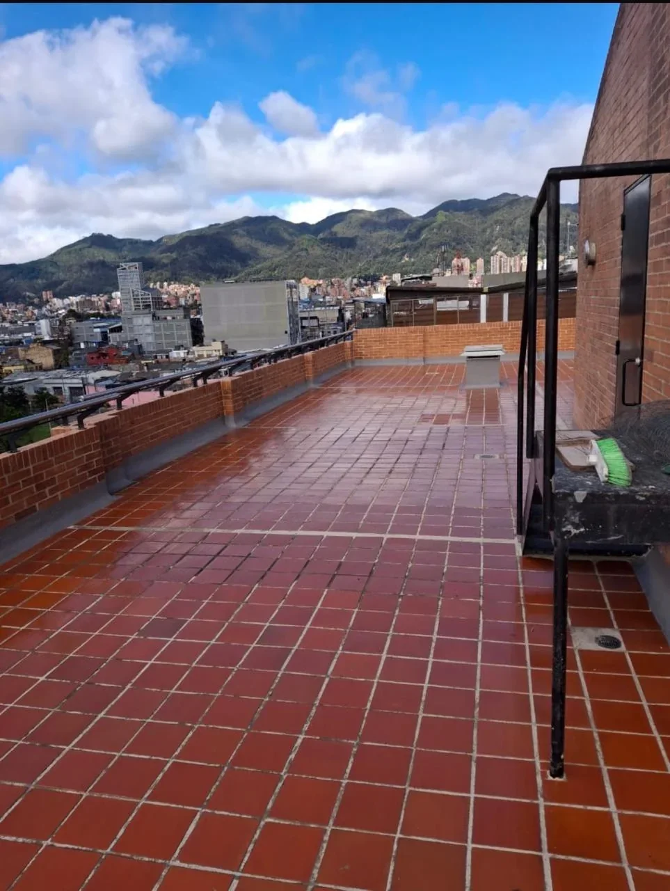
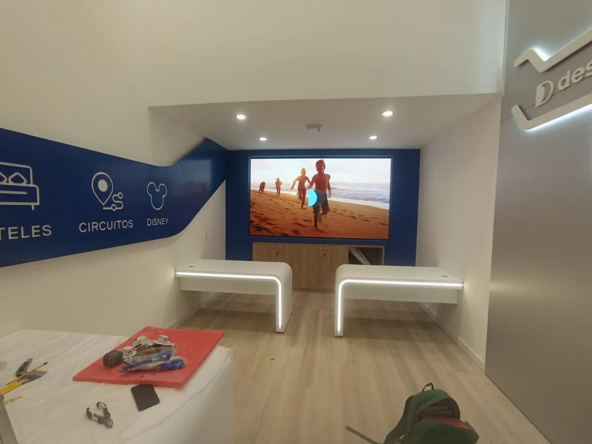
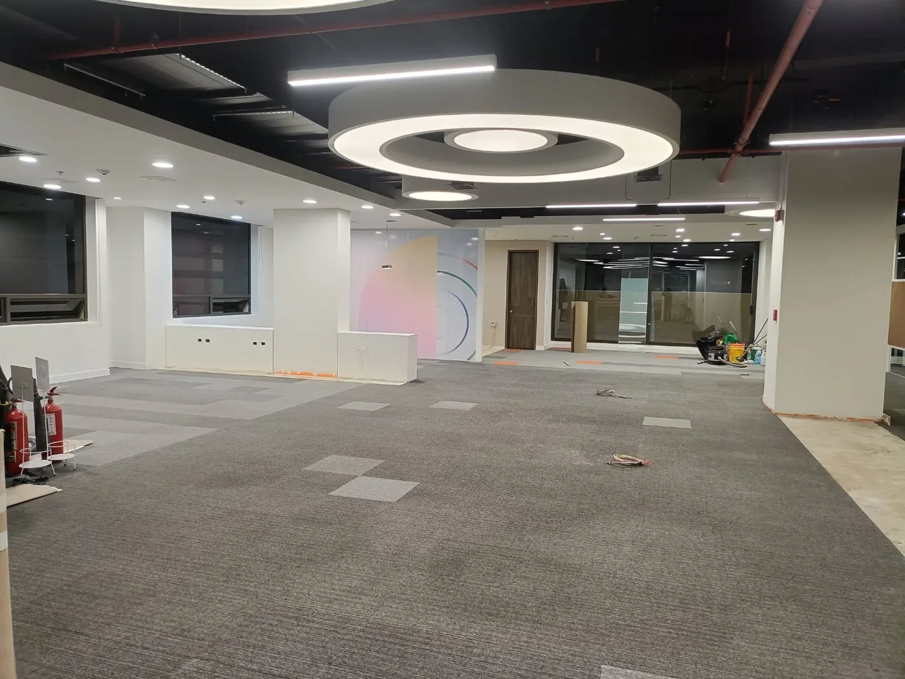
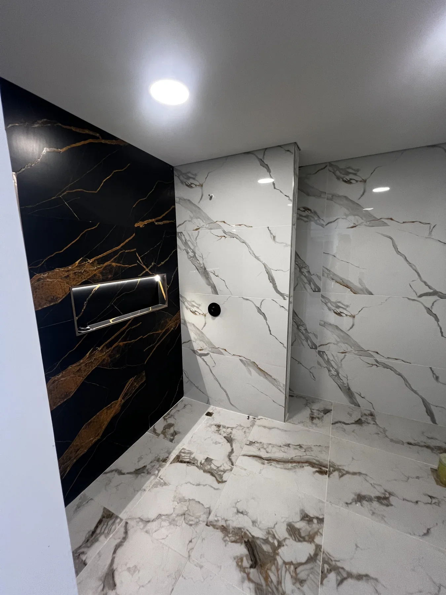
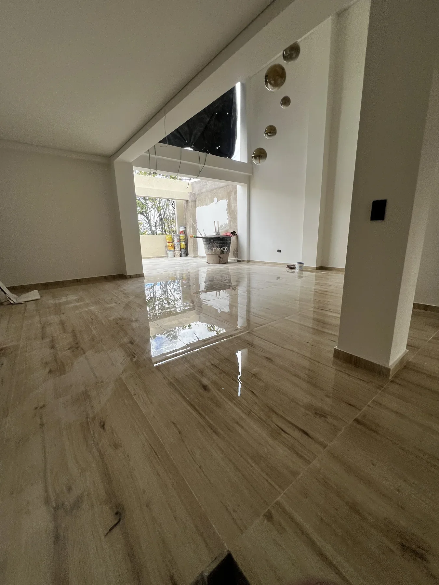

Impermeabilización
Impermeabilización de terraza y cubierta
Proceso técnico y superficie terminada.
Proyectos
Remodelación residencial, impermeabilización, adecuación comercial, drywall y acabados organizados por tipo de intervención.

Portafolio
Una muestra visual de remodelaciones, acabados, impermeabilización y adecuaciones comerciales ejecutadas por SANBU.

Cocina, baño, cielo raso y acabados interiores.

Proceso técnico y superficie terminada.




Ejecución
Cada intervención combina planeación, manejo del espacio y cuidado visible en la entrega final.

Antes · proceso · resultado
La evidencia se presenta como secuencia: estado inicial, intervención y acabado visible. No se mezclan fotografías sin relación.

Estado inicial documentado antes de la intervención residencial.

Proceso técnico visible durante la ejecución del frente interior.
Resultado terminado con cocina, acabados claros y lectura integrada.
Otra secuencia real

Cotización
SANBU puede revisar el estado actual, el tipo de intervención y la ruta de ejecución.
Envíanos fotos y una descripción breve por WhatsApp.